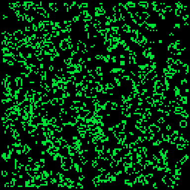
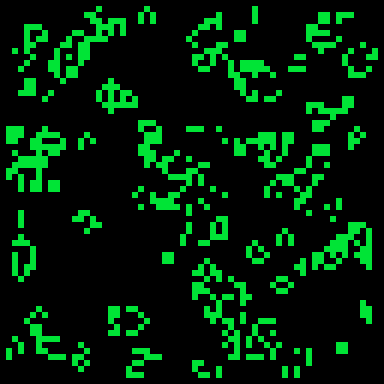

For my next PICO-8 project I wanted to implement Conway's Game of Life. I chose this project since I felt it would push me to use some of the more advanced memory features of PICO-8. You can check out my implementation here, press the right key to reseed the grid and restart (hold for a cool static effect). The code is accessible here on Github.
To properly implement Conway's Game of Life you need to store the grid position of each element for the current frame as well as the previous. I wanted to use binary data for this so I consulted the memory map. I determined that I should have enough memory in the General Use RAM (0x4300-0x5DFF) to store the current frame as well as the previous for each pixel in the 128x128 grid. To do this I needed to write a renderer for the data that reads each bit and uses its index to find the x and y coordinate of the pixel.
After initially completing this I found the performance to be very slow (1-2fps). I then refactored the code so I could easily adjust the scale of the grid. The only downside with this is that the size of each rectangle needs to be a power of 2 due to the way the data is stored in memory. Using a 2x2 cell size rather than 1x1 improved performance to around 5fps but it was still too slow for my tastes. I think the sweet spot for PICO-8 I found was 4x4.
 